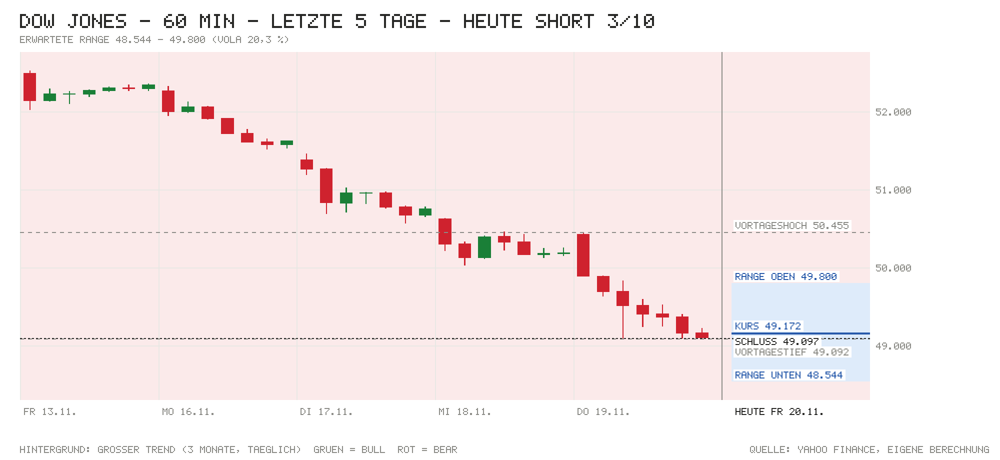

Tagesentscheidung ab 15:32 bis 22:00 Uhr
Nach dem −1.101-Punkte-Tag geht der weltweite KI-Ausverkauf weiter: Nikkei −5,06 %, DAX −2,04 %, Nasdaq 100 −1,50 %. Im Dow bremst Goldman Sachs allein mit −184 Pkt., dazu steht der große Trend auf Bear. Das wichtigste Gegenargument: Der Dow hält sich dank Umschichtung in Defensive (UnitedHealth, Home Depot, Amgen, J&J) im Plus, und die 10J-Rendite fällt unter 5 %. Darum nur knapp Short (eigene Einschätzung).
- Kurs um 15:32
- 49.172
- Erwartete Range
- 48.544 – 49.800
- Eingepreist (Tagesoption)
- ±1,28 %
Einschätzung vom Kurs um 15:32 bis zum US-Schluss. Range = ±1 σ für die restliche Handelszeit aus der S&P-500-Tagesoption, auf den Dow umgerechnet (ca. 68 %). Keine Anlageberatung.
Chart

Signale
| Signal | Wirkung | Stand und Einordnung |
|---|---|---|
| Eröffnung & erste Minuten | Rückenwind | Eröffnung 49.072 (Lücke −0,05 %), jetzt 49.172 (+0,2 % seit Eröffnung), Hoch/Tief bisher 49.193/49.026. Leichte Stabilisierung nach dem Einbruch. |
| Schwergewichte heute | Neutral | Alle 30 Werte zusammen +57 Pkt. Goldman Sachs −184, Caterpillar −69, Microsoft −32, Amazon −30, Nvidia −29; dagegen UnitedHealth +79, Home Depot +46, Amgen +35, Travelers +32. |
| US-Daten heute | Neutral | Um 14:30 keine Daten. Michigan-Stimmung erst um 16:00 (Prognose 51,0, zuvor 48,0). |
| Europa & Asien | Gegenwind | DAX −2,04 %, Euro Stoxx 50 −2,07 %. Über Nacht Nikkei −5,06 %, Hang Seng −1,89 %, Shanghai −1,22 %. Chipwerte weltweit unter Druck. |
| Zinserwartung | Gegenwind | Fed am 9.12.: 101 % für +25 Bp. (impl. 4,13 %), Januar weitere 63 %. Die Erhöhung ist voll eingepreist. |
| Renditen | Rückenwind | US 2J 4,69 % (−7 Bp.), 10J 4,98 % (−7 Bp.), wieder unter 5 %. Flucht in Anleihen entlastet die Bewertung. |
| Kreditstress | Neutral | FRED n/v. Ersatz: HYG −0,01 %, LQD +0,29 %. Kein Stress bei Unternehmensanleihen. |
| Öl & Dollar | Neutral | WTI 81,99 USD (−1,47 %), Brent 88,70 USD (−3,57 %), EUR/USD 1,0991 (+0,18 %). Fallendes Öl hilft, spiegelt aber auch Wachstumssorgen. |
| Trend | Rückenwind | 49.172 klar unter dem 21-Tage- (51.893), 50-Tage- (51.794) und 200-Tage-Schnitt (50.780). Der große Trend steht seit 28.10. auf Bear und passt zu Short. |
| Positionierung | Neutral | COT 10.11.: Hebel-Fonds im S&P-Future netto −303.060 (+69.258), Vermögensverwalter netto +914.130. Keine neuen Extreme. |
| Unternehmensnachrichten | Gegenwind | Chip-Ausverkauf: Nvidia −3,2 % (Kursziel von Daiwa gesenkt), AMD und TSMC vorbörslich deutlich tiefer. Das Anthropic-Debüt verblasste von +34 % auf +17 %, die KI-Skepsis wächst. |
| Profi-Sicht | Gegenwind | ING FX Daily: „Carry trade unwind in full swing“, Risikoabbau läuft. |
| Termine im Fenster | Neutral | Michigan 16:00, Rede Fed-Gouverneurin Cook 18:15, großer monatlicher Optionsverfall (dritter Freitag). Kein Zinsentscheid. |
Dow-Werte heute
| Aktie | Heute | Beitrag |
|---|---|---|
| Goldman Sachs | −3,54 % | −184 Pkt. |
| UnitedHealth | +3,89 % | +79 Pkt. |
| Caterpillar | −2,11 % | −69 Pkt. |
| Home Depot | +2,24 % | +46 Pkt. |
| Amgen | +1,32 % | +35 Pkt. |
| Microsoft | −1,04 % | −32 Pkt. |
| Travelers | +1,33 % | +32 Pkt. |
| Sherwin-Williams | +1,49 % | +31 Pkt. |
| Summe aller 30 Werte | +57 Pkt. |
Beitrag = Kursänderung seit gestern ÷ Dow-Divisor (aus den Kursen berechnet, 0,1636). Laufende Kurse von Yahoo, bis zu 15 Minuten verzögert. Die Dow-Liste im Skript hat den Stand Nov. 2024.
Großer Trend (3-Monats-Momentum)
- Stand
- Bear
- Seit
- 28.10. (5 Wechsel in 3 Monaten)
- Schluss 19.11.
- −7,85 % vs. Zins +1,00 %
- Heute dreht es bei Schluss über
- 53.949 (jetzt −8,87 %)
Auch mit dem Kurs von jetzt bliebe das Signal Bear, der Abstand ist so groß wie seit Beginn nicht. Bull = Rendite der letzten 3 Monate über dem Geldmarktzins, Bear = darunter. Regel: Rendite der letzten 63 Handelstage (≈ 3 Monate) gegen die 13-Wochen-T-Bill (^IRX, jetzt 4,14 %), jeden Tag zum Schluss neu entschieden, Zeitrahmen Tageskerzen (nach Antonacci 2014, dort monatlich über 12 Monate; täglich entschieden dreht es öfter falsch). Keine Anlageberatung.
Bilanz der letzten Entscheidung
19.11.: Long mit 3/10 ab 50.440. Die Richtung war falsch: Schluss 49.097, −1.343 Punkte gegen die Einschätzung (Hoch 50.455, Tief 49.092). Die Range von ±509 wurde verfehlt. Gesamt seit Start: 11 Einschätzungen, Richtung 55 % richtig, Summe −1.035 Punkte bis Schluss (Schnitt −94). Range bisher an 45 % der 11 Tage getroffen (Soll ca. 68 %).
Marktlage
| Markt | Stand | Veränderung |
|---|---|---|
| Dow Jones (Schluss 19.11.) | 49.097,06 | −2,19 % |
| Dow (Eröffnung heute) | 49.071,82 | −0,05 % |
| Dow (jetzt, Kurs zur Notiz 15:32) | 49.172 | +0,15 % |
| S&P 500 | 7.136,76 | −0,54 % |
| Nasdaq 100 | 26.119,72 | −1,50 % |
| US-Futures (S&P / Nasdaq) | 7.155,75 / 26.248,50 | −0,58 % / −1,32 % |
| DAX (aktuell) | 24.945,40 | −2,04 % |
| Euro Stoxx 50 (aktuell) | 5.987,44 | −2,07 % |
| EUR/USD | 1,0991 | +0,18 % |
| WTI (USD/Barrel) | 81,99 | −1,47 % |
| Brent (USD/Barrel) | 88,70 | −3,57 % |
| Gold (USD/Unze) | 3.580,60 | −2,85 % |
| VIX | 29,68 | +4,36 % |
| VXD (Schluss 19.11.) | 23,91 | +14,24 % |
Stände von 15:34 Uhr (Yahoo, bis 15 Min. verzögert). Gestern −1.101 Punkte, nur 1 der 30 Dow-Werte im Plus; der S&P 500 verlor 2,02 % – sechster Verlusttag in Folge. Fallendes Öl ist grün markiert, steigende Volatilität rot. Heute hält sich der Dow besser als der Nasdaq.
Anleihen & Zinsen
| Kennzahl | Stand | Veränderung |
|---|---|---|
| US-Treasury 2J (live) | 4,69 % | −7 Bp. (vs. 4,76 % offiziell 19.11.) |
| US-Treasury 10J (live) | 4,98 % | −7 Bp. (vs. 5,05 %) |
| Fed nächste Sitzung (9.12.) | 101 % für +25 Bp. (impl. 4,13 %) | Erhöhung voll eingepreist |
| Fed-Zielband | 3,75–4,00 % (EFFR 3,88 %) | zuletzt +25 Bp. am 17.9. |
| US-Hochzins (HYG, Ersatz) | 76,53 USD | −0,01 % heute |
| Investment Grade (LQD, Ersatz) | 103,38 USD | +0,29 % heute |
Die Risikoaufschläge von FRED lagen nicht vor, daher die Anleihe-ETFs HYG und LQD als Ersatz (nur Tagesveränderung, Wochenwert n/v). US-Live-Kurve Stand 15:32 Uhr. Offizielle 10J vor einer Woche: 5,10 %.
Termine heute (deutsche Zeit)
- 14:25 Rede Fed-Gouverneur Waller – Inhalt bei Redaktionsschluss n/v
- 15:30 Eröffnung der Wall Street; monatlicher Optionsverfall (dritter Freitag)
- 16:00 USA: Michigan-Verbraucherstimmung – Prognose 51,0 (zuvor 48,0) · Erwartungen Prognose 50,9 (zuvor 48,8)
- 16:00 USA: Michigan-Inflationserwartung 1 Jahr – Prognose 4,3 % (zuvor 4,7 %) · 5 Jahre Prognose 3,4 % (zuvor 3,5 %)
- 18:15 Rede Fed-Gouverneurin Cook
- 22:00 US-Börsenschluss; keine Quartalszahlen von Dow-Werten im Kalender
Nachrichten zu Dow-Werten
- Gesamtmarkt: Gestern drehte der Markt vom Anthropic-Hoch in einen breiten Ausverkauf: S&P 500 von etwa +1,3 % auf −2,02 %, Dow −1.101 Punkte, nur ein Dow-Wert im Plus. Einschätzung: Das Muster „Erholung am Morgen, Abverkauf am Nachmittag“ mahnt zur Vorsicht.
- Goldman Sachs: −3,54 % (−184 Pkt.), nach −2,9 % gestern größter Bremser. Eigene Meldung von heute fand sich nicht. Einschätzung (ohne Quelle): Der Absturz des KI-Handels trifft die Bank, die vom Anthropic-Börsengang und dem Emissionsboom am stärksten profitieren sollte.
- Nvidia: −3,22 % (−29 Pkt.), siebter Verlusttag in Folge; Daiwa senkte das Kursziel. AMD verlor gestern 7,7 % nach einer Leerverkäufer-Meldung, TSMC vorbörslich −4,2 %. Einschätzung: negativ, die Zweifel an der Finanzierung des Rechenzentrum-Ausbaus wachsen.
- UnitedHealth, Home Depot, Amgen, J&J, McDonald's: zusammen rund +214 Pkt. Keine eigenen Meldungen gefunden. Einschätzung (ohne Quelle): Umschichtung aus Tech in Defensive und Zinssensible, gestützt von fallenden Renditen – das hält den Dow vorn.
- Caterpillar: −2,11 % (−69 Pkt.). Einschätzung (ohne Quelle): Als Rechenzentrum-Ausrüster (Generatoren) Teil des KI-Abverkaufs; fallende Metall- und Ölpreise belasten zusätzlich.
Profi-Sicht & Positionierung
- ING THINK: Das FX Daily von heute titelt „Carry trade unwind in full swing“, der Commodities-Bericht „Metals sell-off runs ahead of physical markets“ sieht den Metall-Ausverkauf dem physischen Markt vorauseilen. Die Artikeltexte waren nicht abrufbar, die Einordnung beruht auf den Titeln.
- Positionierung (COT, Stand 10.11.): Hebel-Fonds im S&P-Future netto −303.060 Kontrakte (Short-Abbau um 69.258), Vermögensverwalter netto +914.130. In 10J-Treasuries bauen Hebel-Fonds ihre Short-Position auf −2,30 Mio. aus. Keine neuen Extreme.
Quellen
- Marktdaten (Skript
marktdaten.mjs): Yahoo Finance (Kurse, Dow-Werte, VXD, ^IRX), Nasdaq (Kalender, Optionskette SPY), US-Live-Kurve, Bundesbank, U.S. Treasury, Fed-Pfad über Amber Terminal, CFTC, ING THINK - Motley Fool: Dow plunges 1,100 points as the S&P 500 suffers its 6th straight day of losses
- Washington Post: How major US stock indexes fared Thursday 11/19/2026
- 24/7 Wall St.: AMD and TSMC slide as Nasdaq futures fall after Asia's chip selloff
- Journal Arta: Nasdaq, S&P 500 futures slide on AI fears
- Global Banking & Finance: Goldman Sachs falls 2.94% in Thursday's session
- ING THINK: FX Daily – Carry trade unwind in full swing
- ING THINK: Metals sell-off runs ahead of physical markets